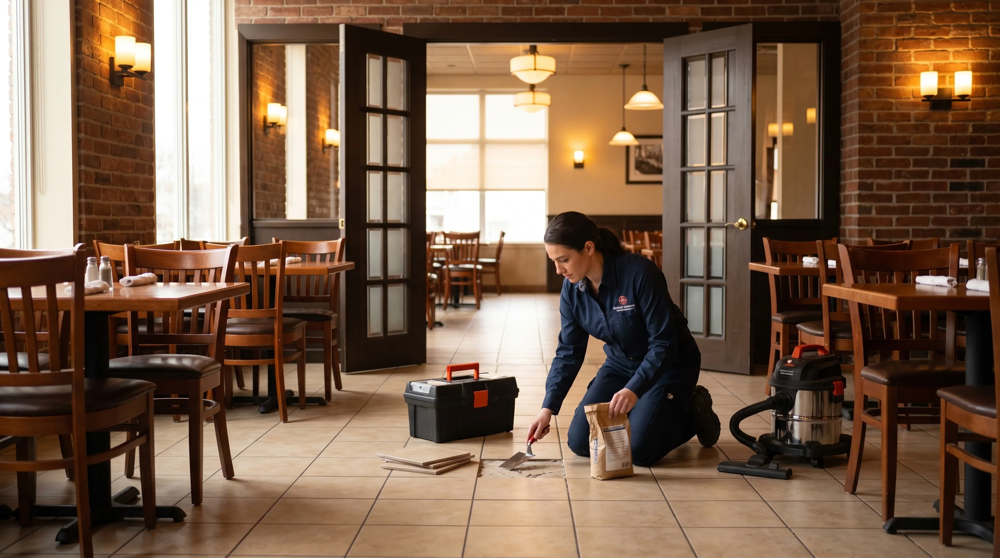

Risk becomes visible
Door clearances, reach ranges, thresholds, restrooms, signage, and access barriers are documented before work starts.
ADA-related work is about people, liability, usability, and details. ELF Commercial helps commercial clients identify practical accessibility punch items, plan upgrades, document conditions, and route specialist-first code or permit issues early.
For ADA upgrades, success is measured by accessibility punch planning, clear documentation, minimal interruption, and whether the permanent fix prevents a repeat ticket.
Door clearances, reach ranges, thresholds, restrooms, signage, and access barriers are documented before work starts.
Practical grab bar, hardware, signage, threshold, and fixture-adjacent punch items can be scoped clearly.
Permit, structural, plumbing, ramp, fire, and code-heavy items are identified before money is wasted.
Final ADA upgrades scope depends on access rules, operating hours, material availability, approval limits, hidden conditions, and whether a licensed specialist or permit path is needed.
Accessibility upgrade content should distinguish practical repair work from code, permit, or design professional scope, while still helping owners identify barriers before they become complaints.
Door hardware, thresholds, restroom accessories, ramps, signage-adjacent items, and clearances are reviewed as practical user experience issues.
Structural changes, formal compliance determinations, permits, and legal interpretations should be routed to the right licensed or design professional.
Photos and notes help owners track visible barriers, completed punch items, and future accessibility planning priorities.
This page is intentionally focused on ADA upgrades, so the operating notes, triage cues, and closeout expectations are different from the rest of the commercial library.
Grab bar blocking, mirror height, clear floor space, latch hardware, threshold changes, and path-of-travel details should be documented before finish work starts.
ELF can handle practical punch items and identify permit, design, or licensed-specialist issues before they slow a landlord or tenant team.
ADA work is not only liability; it affects whether guests, staff, and vendors can move through the space without awkward workarounds.
Classify the business, urgency, access window, scope, and location count. The console builds a response priority, planning range, downtime note, and dispatch-ready brief.
ADA work should be honest: ELF can help with practical punch and upgrades, while legal certification and code-heavy scope should be reviewed by the right professional.
The workflow below is specific to ADA upgrades: it names the first signal, the operating risk, the repair action, and the closeout note a manager actually needs.
Document access path, entrance, restroom, reach, signage, door, and threshold issues.
Separate simple punch items from code, permit, plumbing, structural, or specialist scope.
Complete practical repairs where appropriate and documented.
Provide notes and photos for owner, tenant, or compliance review.
These internal links point to adjacent commercial intents without repeating the full service library on every page.
No. ELF can help with practical accessibility upgrades, punch work, and documentation, but legal compliance certification should come from the proper qualified professional.
ELF can plan and install some practical accessibility-related items when the wall condition, blocking, code context, and scope are appropriate. Some work may require specialist review.
Common issues include reach ranges, door hardware, thresholds, restroom accessories, grab bars, route obstructions, signage, and trip hazards.
 CommercialOffice Repairs & Maintenance in Dallas-Fort Worth | ELF Commercial
CommercialOffice Repairs & Maintenance in Dallas-Fort Worth | ELF CommercialOffice repair and maintenance across DFW: walls, paint, doors, hardware, flooring, furniture assembly, mounting, conference rooms, and reconfiguration punch lists.

CommercialRestaurant Repairs & Build-Out Support in DFW | ELF CommercialRestaurant repair, refresh, and punch work across DFW: front-of-house, back-of-house, restrooms, tile, doors, drywall, paint, and after-hours service.
 GuideHome Upgrades With Best ROI When Selling in DFW | 2026 Guide
GuideHome Upgrades With Best ROI When Selling in DFW | 2026 GuideDFW home upgrade ROI guide for selling: paint, drywall, flooring, cabinets, bathrooms, kitchens, curb appeal, lighting, repairs, and buyer-visible improvements.
 LocationHandyman Allen TX | Punch Lists, Repairs & Installations
LocationHandyman Allen TX | Punch Lists, Repairs & InstallationsAllen TX handyman services guide for punch lists, door adjustments, fixtures, drywall, caulk, shelves, garage upgrades, pre-sale repairs, and practical home maintenance.